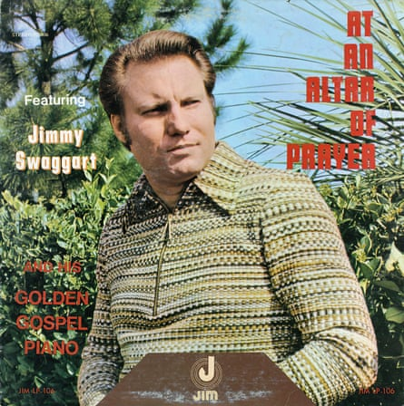

The American televangelist hellfire preacher Jimmy Swaggart, who has died aged 90 , fell by the wayside not once but twice with sex workers, spectacularly ending his previously successful TV ministry that screened in 140 countries and was reputed to bring in $150m a year in merchandising sales.
On the first occasion, when he was filmed with a woman at a motel near his church in the suburbs of New Orleans in 1988, he prayed for forgiveness in a tearful TV address. On the second occasion three years later in California when he was caught with a woman in his car, he just told his congregation: “The Lord told me it’s flat out none of your business.”
His plight had not been helped by his previous denunciations of rival Pentecostal preachers, which suddenly smacked of hypocrisy. When Jim Bakker had admitted to an affair with a church secretary, Swaggart described him as a cancer on the body of Christ, one of those “pompadoured pretty boys with their hair done and their nails done who call themselves preachers” .
He had also hounded a rival televangelist called Marvin Gorman out of ministry with accusations of adultery. It was Gorman who then proved his nemesis, tracking him to the motel.
Swaggart’s style as a preacher was bellowing alternating with whispering, speaking in tongues, bursts of song and bouts of tears. There were anecdotes of miraculous saves – his car’s engine came unclogged on one occasion apparently by the application of anointing oil – and there were dreadful warnings too. These were well within the American Pentecostal traditions of what was called the sawdust trail, pioneered in rural circus tents by earlier evangelists such as Billy Sunday . Indeed Swaggart started his ministry preaching on street corners and from a flatbed truck, and living in church basements when he could not afford anywhere more upmarket to stay.
His denunciations were scattergun and not exactly Christian, though he was of course a Biblical literalist. He denounced Catholics and Jews, Mormons and Muslims with equal venom as cultists and heretics, as well as Darwinists, communists, liberals and judges. He suggested that the Jews had brought the Holocaust on themselves by denying Christ – and of course the End Times were nigh.
Jimmy Swaggart’s 1972 gospel album At an Altar of Prayer. He had a fine baritone voice and made many bestselling records.Photograph: Alamy
“Armageddon is coming,” he would proclaim. “My Lord, I am happy. I don’t care who it bothers. It thrills my soul.”
He came from the tiny rural Louisiana town of Ferriday, part of a tightly knit clan “entwined like a big tight ball of rubber bands”. His father, Willie Leon “Sun” Swaggart, was a sharecropper, grocery store manager, moonshiner, fiddle player and occasional preacher, and his mother, Minnie Bell (nee Herron), was from the same rural background. One cousin was the future rock’n’roll star Jerry Lee Lewis and another the country and western musician Mickey Gilley .
Swaggart himself had a fine baritone singing voice and might have followed Lewis. He was offered terms by the pioneering Sun Records producer Sam Phillips but turned him down because of his religious calling, which, unlike his cousins, forbade alcohol, dancing, tobacco and secular music.
It was said the cousins preached from the opposite shores of the river they called salvation. However it did not stop him later issuing bestselling gospel albums, including This Is Just What Heaven Means to Me, though he claimed characteristically that he had negotiated the contracts through God’s help: “Could you take 90% and let me have 10%?” The albums sold in their millions.
Swaggart was ordained by the Pentecostal Assemblies of God sect in 1961 after several years of preaching around the south, began broadcasting to Christian religious radio stations a year later and in 1969 founded his Family Worship Center in Baton Rouge, from where he launched the weekly Camp Meeting Hour radio programme. He promoted himself as an “old-fashioned, Holy Ghost-filled, shouting, weeping, soul-winning, Gospel preachin’ preacher”. It was certainly entertaining.
The centre itself grew to hold a congregation of 7,000 and the purchase of a bankrupt television studio in 1975 expanded Swaggart’s ministry across the country. Within a few years 200 local television companies were taking his daily programmes. Eventually it was beamed internationally and Swaggart briefly became the biggest star in the televangelical firmament.
There were also merchandising opportunities: the sale of knick-knacks including belt buckles, T-shirts, mugs, plates and even replicas of Jesus’s crown of thorns. Swaggart himself contributed more than 50 books and bible study guides. The worship centre became the largest mail-order business in Louisiana and the church grounds expanded to 200 acres, at one stage including a bible college.
Swaggart was less politically active nationally than his contemporaries Pat Robertson and Jerry Falwell , though he supported Robertson’s presidential bid in 1988 and later voted for Donald Trump. But he did become entangled with the brutal anti-communist, pro-South African Mozambican resistance group Renamo during the country’s civil war of the 1980s, with his ministries accused of funding them and certainly supplying the guerrillas with “improving” literature.
At the age of 17 Swaggart had married his childhood sweetheart, 15-year-old Frances Anderson. He would later declare: “It is impossible for me to stray. My wife is with me all the time. I’m never alone.”
This assertion was severely tested by the sex scandals, which came to light after Swaggart fell out with Gorman, both competing for similar television audiences in Louisiana. Swaggart got Gorman defrocked from the Assemblies of God after making allegations of adultery, which led Gorman to employ a private detective who recorded Swaggart visiting a sex worker at a Travel Inn on the outskirts of New Orleans.
Gorman offered a deal: he would not release the footage if Swaggart publicly apologised and withdrew his allegations, but when Swaggart did not answer the story rapidly went public.
This prompted Swaggart’s highly public mea culpa to his television followers. Damp with sweat and ostentatiously crying he called on the Almighty’s help: “I have sinned against you my Lord and I would ask that your precious blood would wash and cleanse every stain until it is in the seas of God’s forgiveness, not to be remembered against me any more.”
The authorities were notably more forgiving than they had been to Gorman, suspending him from preaching for two years, which Swaggart ignored on the grounds that he could not afford the loss of earnings. Defrocked, he then became an independent preacher.
Scepticism about Swaggart’s sincerity hardened even among his most devoted followers when three years later he was stopped by police while driving his white Jaguar erratically in Indio, California. His passenger told reporters: “He asked me for sex. I mean that’s why he stopped me. That’s what I do. I’m a prostitute.” She claimed the car had been swerving because he was trying to hide pornographic magazines under the driver’s seat.
With that his national ministry effectively collapsed. He eventually reached a million-dollar settlement with Gorman, but the bible college, private jet and his and hers limousines had to go. He continued preaching but his ministry essentially passed to his son Donnie.
Frances and Donnie survive him, as do several grandchildren and great-grandchildren.